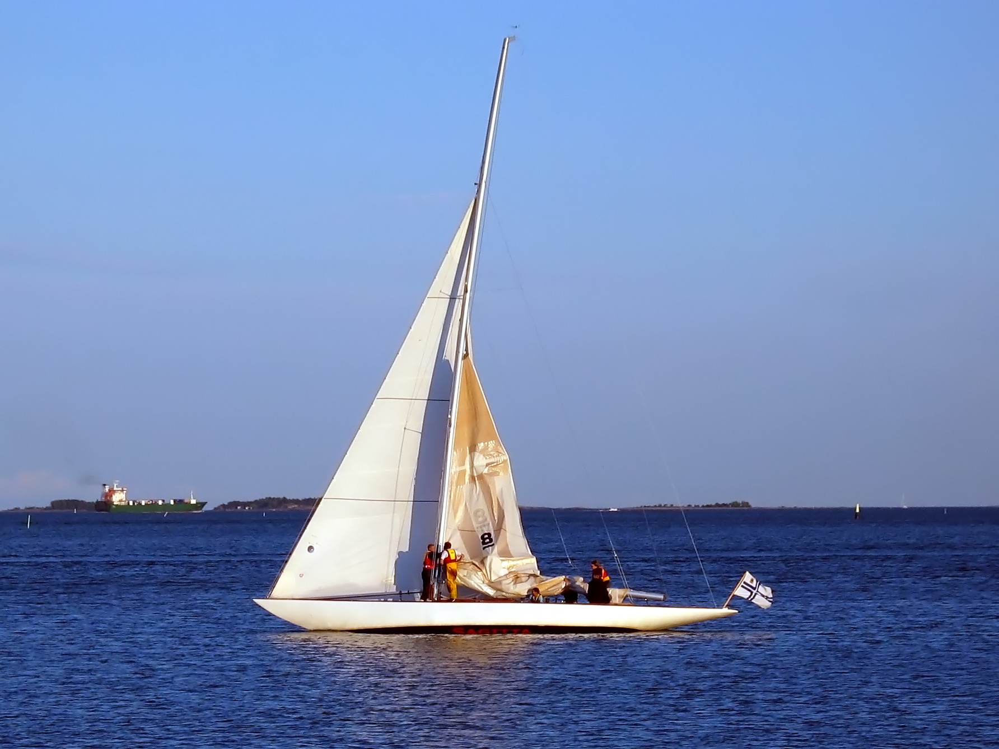

Rugby is my passion. Since a very young age I have always shown a very keen interest in the sport. Currently, I am playing with the UCC u20/Senior Squad. Being a part of the senior rugby squad is a a great pleasure and achievement for me as I am still very young. From 2012 to 2018 I was part of the CBC Cork rugby group. We achieved many goals Such as Junior Cup winners 2015 and Senior Cup semi finalists 2018.
i first started playing golf at 10 years of age. My mother enrolled me in the Fota Island Golf Club Academy. For two years i recieved personal coaching lessons and practiced three times per week. I would often visit Frankfield driving range with my brother Declan. We would spend several hours practicing with a variety of clubs to better develop our game. At age 16 i decided to quit golf as a hobby as it was too much of a time investment to venture into due to exams.
The year i was born my parents bought a house in Schull West Cork. This is a village situated on the sea. As soon as I was at a capable stage i undertook Sailing courses each year. I reached my level 5 instructing course. Each year my family will rent a small sailing boat for excursions to nearby islands. 